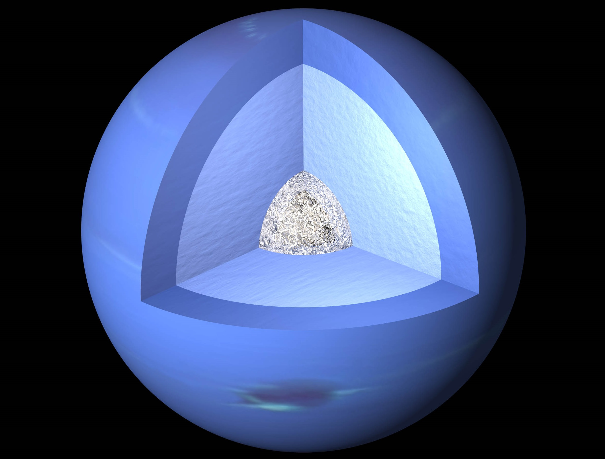

Открыв эту планету, ученые посчитали ее самой дальней, но через несколько десятков лет Нептун оказался к Солнцу гораздо ближе, чем Плутон. Нептун вращается в противоположную сторону от вращения облаков. Из всех планет в нашей системе Нептун — самая холодная. Температура тут может опускаться до минус 221°С.